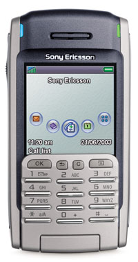

Александр Маляревский
С тех пор, как развитие технологий сделало карманные компьютеры (КПК) доступными по цене для рядового пользователя, они перестали быть экзотикой. В любом вагоне метро или пригородной электрички обязательно найдется как минимум один пассажир, коротающий время в дороге со своим "карманным другом".
Нынешняя ситуация в сегменте КПК сложилась в результате действия нескольких рыночных механизмов. Во-первых, это сформировавшийся рынок КПК second-hand. Некоторое замедление темпов развития карманных устройств (например, разрешение экранов систем на платформе Windows Mobile сегодня, как и год назад, составляет 320х240, а тактовая частота процессоров не поднялась выше 400 МГц) привело к тому, что сейчас легко приобрести подержанную модель, еще вчера принадлежавшую к бизнес-классу, по цене сегодняшних КПК "входного уровня".
Во-вторых, производители предлагают в качестве систем "входного уровня" весьма эффективные модели. Очевидно, что на такой шаг компании вынуждены пойти под влиянием вышеупомянутого рынка second-hand и обострившейся конкуренции. Сегодня по своим характеристикам бизнес-модели отличаются разве что предустановленными адаптерами беспроводного доступа (Bluetooth или Wi-Fi) и дополнительными средствами защиты информации (например, сканером отпечатка пальца, который обычному пользователю совершенно не нужен).
В-третьих, рост рынка вызывает повышенное внимание к данным устройствам со стороны средств массовой информации. Следует отметить, что тут работает и простой механизм "быть не хуже, чем Джонсы": если у кого-то в студенческой группе или в отделе появляется КПК, это обеспечивает повышенное внимание к таким устройствам со стороны других членов коллектива. А сегодня КПК появляются у многих и появляются все чаще.
Рынок КПКВ 2003 г. в мире, по данным IDC, было продано более 10,4 млн карманных компьютеров. На российском же рынке, по данным SmartMarketing (http://www.smartmarketing.ru), в 2003 г. общий объем продаж КПК составил 131 030 шт.
|
| RoverPC P4 - "входной билет" для пользователей КПК сегодня стоит 299 долл. Intel XScale/400 МГц, 64 Мбайт оперативной памяти, слот расширения SD/SDIO,
IfDA в качестве средства беспроводной связи - и все это при массе 120 г.
|
Когда наступит насыщение?
"Персональная" составляющая рынка КПК почти исчерпана. Большинство людей, которым нужен карманный компьютер, таковой уже приобрели. Заметим, что необходимость КПК для индивидуального пользователя определяется не только рыночной ситуацией и развитием технологии, а потребностями данного человека.
Ситуация с КПК напоминает происходящее с бумажными органайзерами (ведь карманный компьютер в первую очередь - средство оптимизации распределения времени человека). К середине лета органайзеры на текущий год распродают буквально на каждом углу, причем качественную полиграфическую продукцию предлагают по смешным ценам, много ниже себестоимости. И нельзя сказать, чтобы она пользовалась популярностью, - ведь все, кому по роду занятий приходится планировать свое время, органайзерами обзавелись много раньше, а те, для кого учет и планирование каждого дня своей рабочей недели неактуальны, их и вовсе не купят. Не нужен этим людям органайзер, и поэтому на их решение не повлияют ни низкие цены, ни разнообразие выбора, ни дополнительные "бонусы", прилагаемые или "встроенные" в органайзер: калькуляторы, визитницы, ручки и т. д.
Модернизировать свой органайзер в середине года пользователь тоже вряд ли будет, если имеющийся не утерян или не вышел из строя (к примеру, залит кофе). Заметим, что КПК меняют еще реже - если бумажный органайзер в январе будет обязательно заменен на новый, то КПК в такой замене на рубеже лет не нуждается.
Конечно, КПК, как и всякий компьютер, рано или поздно будет заменен на новую, более "продвинутую" (удобную, производительную и т. д.) модель, но... особого технического прогресса в этой области не наблюдается.
Не путать корпоративное и бизнес-применение
Если корпоративный рынок все еще прохладно относится к КПК, то бизнес-пользователи применяют эти устройства все чаще. Разница очевидна: бизнес-пользователи приобретают КПК для решения собственных индивидуальных задач (зачастую имеющих отношение к рабочей деятельности), в то время как корпоративные применения предусматривают использование оборудования для решения задач более крупного масштаба (всей компании или, как минимум, отдела).
КПК и коммуникаторы в корпоративном секторе применяются нечасто. Существует целый ряд программно-аппаратных решений, использующих такого рода устройства в качестве терминалов. Например, снабдив КПК средствами беспроводного доступа к локальной сети и встроенным или "навесным" сканером штрих-кодов, можно получить удобный мобильный терминал для системы складского учета. Существуют решения, использующие в качестве "навесного" оборудования сканеры отпечатков пальцев (разумеется, они актуальны только для органов внутренних дел и им подобных). Есть "навесные" принтеры, в комплекте с которыми КПК могут применяться той же милицией (например, в качестве устройства для выписки штрафов на месте), но вполне успешно служат и более цивильным целям (для печати счетов и чеков и т. д.). Но эти и другие решения имеют ограниченные области использования.
Однако бизнес-КПК мало чем отличаются от своих "некорпоративных" собратьев класса hi-end. Если телефоны бизнес-класса имеют более строгий дизайн, возможность синхронизации данных с компьютером и расширенные функции органайзера и адресной книги, то в случае КПК эти различия неактуальны. Дизайн у всех карманных компьютеров практически одинаков, все КПК могут синхронизировать данные с "большими" компьютерами, а функциональность адресной книги и других приложений органайзера тоже стандартна (в основном она определяется платформой, хотя производитель и может ее несколько расширить за счет предустановки дополнительных программ). В результате КПК бизнес-класса, которые иногда все же появляются на рынке, - это скорее идея менеджеров по маркетингу, чем инженеров. Иногда, правда, к этим устройствам выпускаются дополнительные опции, позволяющие подключать их к внешним мониторам или проекторам (что удобно для проведения презентаций), но более такие системы не выделяются ничем.
| На корпоративном рынке, который традиционно наиболее консервативен, в качестве ультрамобильных платформ большую, чем у КПК, популярность приобретают системы на платформе Windows: мини-ноутбуки, планшеты и т. д. |
| Pocket LOOX 400 - кроме позиционирования, бизнес-КПК практически ничем не отличаются от "топовых" моделей, рассчитанных на массовое применение.
|
Динамика различных платформ
Несмотря на рост рынка, ничего особенно примечательного в технологическом плане в этом сегменте не произошло.
Windows Mobile
Системы на Windows Mobile по-прежнему лидируют по производительности. Победа платформы Intel в сегменте КПК еще более впечатляюща, чем на рынке настольных систем или ноутбуков. Практически все компьютеры этой платформы сегодня строятся на базе процессоров Intel XScale с тактовой частотой 400 МГц. Лишь в некоторых давно выпускаемых или экстремально дешевых моделях можно встретить процессоры Samsung или микросхемы Intel предыдущих модификаций.
Оперативная память обычно имеет объем 64 или 128 Мбайт - выбор невелик, но меньше памяти не бывает даже в дешевых КПК, а больший объем ОЗУ не встраивают и в самые дорогие модели.
Экраны тоже похожи, как "близнецы-братья", - разрешение 320х240, 64К цветов. Разве что Toshiba выпустила модель е800 с экраном VGA-разрешения - 640х480. Однако возможности этого экрана могут использовать лишь несколько приложений, поставляемых вместе с е800, так что единственное воздействие, которое выход данного КПК оказал на рынок в целом, это демонстрация технологического лидерства компании и не более того.
| Toshiba e800 - первый и пока единственный Pocket PC, имеющий экран размером 640х480. Однако лишь несколько программ поддерживают работу с таким экраном.
|
Большинство систем производители перевели с Pocket PC 2002 на Windows Mobile 2003, но особой разницы между этими ОС нет (как не было ее в свое время между Windows 95 и 98), поэтому на рынке появление обновленной платформы не вызвало сколько-нибудь заметных изменений.
Все чаще карманные системы оснащаются средствами беспроводного доступа. Сегодня не только топовые модели, но и системы среднего класса снабжаются Wi-Fi-адаптерами, а Bluetooth присутствует даже в КПК входного уровня (пример - iPAQ h1940).
В карманные компьютеры встраивают VGA-камеры (ее наличие приятно, но ничего революционного в развитие платформы не привносит) и GPS-приемники (на массовое распространение такие системы не могут рассчитывать из-за увеличенных размеров и массы).
Ситуация со слотами расширения напоминает "технологическую контрреволюцию". Если год назад карманные системы избавились от слотов CompactFlash, то сегодня последние триумфально возвращаются в старших моделях. Смысл этого возвращения непонятен, ибо SD-слоты, разумеется, остаются, память на SD-картах стремительно дешевеет, а поддержка спецификации SDIO позволяет присоединять к этим слотам различные периферийные устройства (от цифровых фотокамер до GPS-приемников). Конечно, выпущено достаточное количество периферийных устройств на CF-картах, но их существование вовсе не означает совместимости с современными карманными системами. К сожалению, совместимость карт расширения для КПК далека от достигнутой с картами ПК, и ответ на вопрос, подходит ли карта двухлетней давности к только что выпущенному "карманнику", можно найти только экспериментально.
Ожидаемого многими аналитиками появления систем, обладающих возможностью присоединения USB-периферии, не произошло. Равно как не появились и карманные компьютеры в форм-факторе ноутбуков со встроенными аппаратными клавиатурами. HP iPAQ h4350 с крошечными аппаратными клавишами на расположенной под экраном клавиатуре не в счет - сколько-нибудь длинный текст на нем набрать крайне сложно. Существует мнение, что клавиатурные КПК были искусственно убраны с рынка компаниями-производителями, которые почувствовали конкуренцию со стороны этих систем для существенно более прибыльного рынка ноутбуков. Это весьма похоже на правду, учитывая, что основным производителем клавиатурных КПК была Hewlett-Packard. На мировом рынке, кроме безусловно лидирующей Jornada, присутствовали и другие "клавиатурные" КПК, но в России они были экзотикой.
Лидеры рынкаНа мировом рынке карманных компьютеров из производителей Pocket PC лидирует НР - ее доля в 2003 г., по данным IDC, составила 22% (общее 2-е место). Далее следуют Dell (5,9%, 4-е место) и Toshiba (3%, 5-е место). На российском рынке иные приоритеты. По данным SmartMarketing, продукция Rover Computers по итогам 2003 г. занимает наибольшую - 36,2% - долю российского рынка КПК в сегменте Pocket PC. На втором месте - HP (33,3%), на третьем - Dell (11,9%).
|
 |
RoverPC P7 - классический КПК среднего класса. Intel XScale/400 МГц, 64 Мбайт оперативной памяти, два слота расширения (SD/SDIO и CF), адаптеры Bluetooth и Wi-Fi - все необходимое и ничего лишнего. Розничная цена чуть выше 450 долл.
|
Palm OS
Действия производителей компьютеров на платформе Palm можно было бы назвать революционными, если бы они не опоздали года на два и не были столь несогласованными и половинчатыми.
Старшие модели компьютеров на платформе Palm приобрели процессоры Intel с той же тактовой частотой 400 МГц, что и системы Windows Mobile (в качестве примера можно привести Tungsten T3 и Tungsten C). Объем оперативной памяти тоже увеличился и достиг нижней границы систем-конкурентов - 64 Мбайт (однако пользователю доступно немногим более 50 Мбайт). Системы обзавелись средствами беспроводного доступа (Tungsten T3 - Bluetooth, Tungsten C - Wi-Fi). "Доросли" до уровня конкурентов и экраны - у обоих упомянутых Palm-компьютеров они имеют размер 320х240 и поддерживают 64К цветов. Однако при этом карманные компьютеры Palm утратили свои основные преимущества: они потолстели, потяжелели и подорожали.
Революции в ПО не произошло. Palm-компьютеры по-прежнему не имеют файловой системы (что затрудняет работу с мультимедиа-данными), собственные средства ОС не позволяют работать с файлами Microsoft Office, а это создает неоправданные проблемы, например, с почтой, в которой часто встречаются присоединенные файлы форматов Word и Excel.
Очевидно, что все это сдерживает проникновение Palm-систем на вожделенный корпоративный рынок, на котором все более укрепляется платформа Windows Mobile. Конечно, в обозримом будущем системы Palm будут пользоваться спросом, у продукции компании немало приверженцев, но если в ближайшее время не последует существенных изменений, стратегические перспективы этой платформы останутся весьма туманными.
Заметим, что системы на платформе Palm OS, кроме PalmOne, активно выпускает корпорация Sonу (прочие производители на мировом и российском рынке практически незаметны). Эти компьютеры также пользуются популярностью, хотя при ближайшем рассмотрении оказываются еще более странными, чем рассмотренные выше их собратья. Даже старшие модели строятся на менее мощных процессорах - тактовая частота процессоров Intel в них не превышает 200 МГц, в младших используются процессоры Motorola с той же частотой, а объем собственной оперативной памяти крайне мал - 32, а зачастую и 16 Мбайт! Для расширения памяти, как и во всех устройствах Sony, используется слот MemoryStick, но он есть не во всех моделях КПК. Остается только удивляться, как компания ухитряется продавать эти системы в качестве КПК с расширенными мультимедийными функциями... Разумеется, корпоративным рынком КПК производства Sony не востребованы.
Ситуация с PalmКомпания PalmOne оставалась мировым лидером в производстве КПК еще в прошлом году, занимая 38,1% всего мирового рынка (данные IDC). На втором месте из производителей данной платформы - Sony, продукции которой принадлежит 13,4% рынка (общее 3-е место). Однако рыночная доля систем на платформе Palm постепенно снижается, и по итогам I квартала 2004 г., подведенным компанией Catalyst для рынка ЕМЕА, PalmOne уступила лидерство НР. |
| Tungsten T3 - построен на процессоре Intel с тактовой частотой 400 МГц, имеет 64 Мбайт ОЗУ, экран размером 320х480, SD/SDIO, IrDA, Bluetooth... Только стоит он 450 долл., что вполне сравнимо с ценой Pocket PC.
|
Прочие платформы
На рынке время от времени появляются системы, использующие платформы, отличные от указанных выше. Чаще всего в качестве "альтернативы" выступает Linux, но у этих КПК приверженцев не так много. Особых преимуществ у Linux-систем нет, а количество программ для них крайне мало, особенно по сравнению с доступным изобилием платных и бесплатных решений для платформ Palm и Windows Mobile. Кроме того, "карманная" версия Linux сохраняет проблемы с совместимостью приложений, известные пользователям "больших" машин под управлением Linux/Unix. А заниматься перекомпиляцией приложений для своих КПК могут и хотят далеко не все пользователи...
В результате Linux-КПК оказываются достаточно эффективными лишь для пользователей, способных довольствоваться предустановленным ПО. Очевидно, им и предназначаются представленные на российском рынке системы Sharp Zaurus (другие карманные Linux-системы у нас практически не встречаются).
Для индивидуального использования подойдут системы Casio. Некогда лидирующая на рынке Pocket PC компания после провала с одной из моделей Cassiopeia ушла из этого сегмента мирового рынка (оставшись при этом на рынке решений Windows Mobile в Японии) и поставляет в другие регионы системы на платформах "собственного сочинения". На российском рынке присутствуют несколько моделей простеньких КПК на базе PV-OS (отличающихся малым набором возможностей и экстремально низкой ценой), а также ВЕ-300. Для некоторых категорий пользователей эти решения представляют интерес, но в целом они остаются экзотикой.
Слухи о возвращении на рынок КПК компании Apple продолжают появляться с завидной регулярностью, оставаясь при этом всего лишь слухами. Ходят слухи и о том, что вскоре появятся карманные компьютеры на платформе Symbian. В числе компаний, которые "вот-вот" выйдут на рынок с такими системами, журналисты (а иногда и аналитики) называют то Nokia, то Sharp, то Siemens. Традиционная логика развития рынка просто требует такого решения от крупнейших игроков консорциума, но... сейчас ситуация меняется.
Структура российского рынкаВ России рыночная доля Pocket PC в 2003 г. составила около 40% (по итогам 2002 г. - 33%), доля Palm OS снизилась до 52% (по сравнению с 61% в 2002 г.). Доля Symbian выросла с 5 до 6%. Прочие платформы занимают около 2% (по оценкам 2002 г. - 1%), но их доли сравнимы с погрешностью измерений. |
Коммуникаторы
Стройная картина рынка КПК может быть разрушена только вместе с рынком. Именно этот процесс сейчас и происходит - "классические" КПК стремительно уступают место коммуникаторам.
Коммуникаторами называют карманные компьютеры, обладающие средствами беспроводной связи для доступа к сетевым ресурсам. В качестве такого средства связи может выступать Bluetooth (теоретически ничто не мешает организовать точку беспроводного доступа этого стандарта, хотя на практике они встречаются редко), Wi-Fi (хот-споты, построенные по этой технологии, составляют большинство; они рассчитаны на доступ с ноутбуков, но их без проблем можно использовать и для доступа с КПК) и, наконец, GSM/GPRS.
Коммуникаторы используют те же самые ОС, что и КПК. Иногда в стандартной поставке эти устройства снабжаются программами для поддержки коммуникационных функций. Обычно это браузеры и клиенты электронной почты (зачастую стандартные средства могут лишь синхронизировать данные с почтовым ящиком компьютера, не позволяя работать напрямую с почтовым ресурсом). При наличии GSM-модуля это может быть эмулятор клавиатуры традиционного сотового телефона, а иногда и программы, реализующие голосовое управление.
К коммуникаторам примыкают смартфоны, по сути представляющие собой сотовые телефоны со встроенными карманными компьютерами. Возможности этих "встроенных" компьютеров невелики, ибо малые размеры устройств не позволяют обеспечить их достаточной вычислительной мощностью, а малые экраны - сделать работу столь же комфортной, как и на традиционных КПК. По этим причинам смартфоны комплектуют урезанными версиями ОС для "больших" КПК.
|  | Sony Ericsson P900 - самый сбалансированный коммуникатор на рынке. Единственным его недостатком остается крайне высокая стоимость - 850 долл., сравнимая с ценой не самого дешевого ноутбука входного уровня.
|
И вот тут Symbian "на коне"! Сегодня на рынке представлены только два коммуникатора на платформе Symbian - Sony Ericsson P800 и Р900 - но они пользуются огромной популярностью. К осени клавиатурный коммуникатор - 9500 - на рынок выпустит Nokia (отметим, что это устройство обречено на популярность, так как попадает в совершенно свободную нишу клавиатурных карманных решений). Обе эти компании - Sony Ericsson и Nokia - полны решимости захватить и удержать лидерство на рынке коммуникаторов. Решения на платформе Symbian продвигают и другие производители - Siemens, Motorola, Panasonic, Sendo, Samsung и ряд других, но они пока выпускают только смартфоны.
| Nokia 6600 - один из лучших смартфонов. На экране устройства можно просматривать HTML-страницы, ему доступна трехмерная графика. Разумеется, смартфон позволяет читать почту, но вот отвечать на нее достаточно сложно.
|
Microsoft уделяла мало внимания коммуникаторам на платформе Windows Mobile, поэтому их существует не так много. Наиболее известна в мире система xda II, которую многие компании поставляют под своими марками (i-mate и т. д.). В России наиболее популярен RoverРС S1, первый и долгое время остававшийся единственным российский коммуникатор (компания Rolsen ушла с рынка мобильных телефонов раньше, чем выпустила обещанное устройство, "скрещенное" с КПК, поэтому нельзя даже сказать, смартфон планировался к выпуску или коммуникатор). Коммуникаторы под управлением версии Windows Mobile Phone Edition выпускает также Samsung.
| RoverРС S1 - первый и пока единственный российский коммуникатор.
|
Выпустила свой коммуникатор и Palm, однако Tungsten W, построенный на процессоре Motorola DragonBall VZ/33 МГц и снабженный 16 Мбайт оперативной памяти, способен привлечь только больших поклонников этой платформы. Компания безнадежно опаздывает к разделу рынка коммуникаторов, и это может оказаться фатальным для платформы Palm: ей грозит уйти в прошлое вместе с КПК, которые будут вытеснены коммуникаторами.
Sony не производит Palm-коммуникаторов, однако Palm OS используется в решениях Samsung (отметим, что компания выпускает коммуникаторы на двух платформах - Windows Mobile и Symbian), которые, впрочем, пока не слишком заметны ни в мире, ни в России. Но возможностей корейской компании может оказаться достаточно для того, чтобы придать "второе дыхание" платформе Palm.
КПК и JavaПрактически все модели современных сотовых телефонов имеют встроенную Java-машину, так что их можно рассматривать как смартфоны - ведь они позволяют загружать приложения. Но за все время своего существования Java так и не стала полноценной платформой для цифровых устройств. Решения на Java для телефонов в большинстве случаев - это игры, хотя встречаются и более серьезные приложения (например, GSMkeeper, клиент платежной системы WebMoney для сотовых телефонов, написан на Java).
|